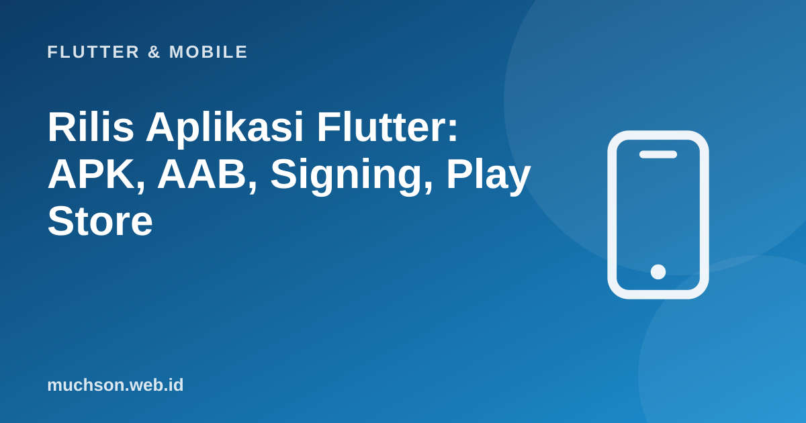

Beranda › Artikel › Flutter & Mobile
Flutter & MobileRilis Aplikasi Flutter: APK, AAB, Signing, Play Store
Aplikasi yang berjalan di emulator belum tentu siap dirilis. Ada identitas aplikasi, penandatanganan, versi, pengecilan kode, pengujian pada perangkat nyata, dan aturan toko yang harus dilewati. Pekerjaan ini membosankan tetapi berulang, sehingga layak dibuat sebagai daftar periksa dan diotomasi.
Sebaiknya sudah paham: aplikasi Flutter yang berjalan, akun pengembang Google Play

Setelah membaca dan mencoba materi ini, Anda mampu:
- menyiapkan identitas aplikasi: nama, ID paket, ikon, dan versi
- membuat keystore dan mengonfigurasi signing dengan aman
- membangun AAB untuk Play Store dan APK untuk distribusi langsung
- memahami R8, obfuscation, dan simbol debug
- mengikuti jalur pengujian internal sampai produksi dan checklist kebijakan
Contoh Flutter ditampilkan sebagai kode yang mengikuti dokumentasi Flutter 3.x. Logika Dart murni dijalankan sungguhan dengan Dart SDK; kode yang butuh Flutter (widget, uji widget) tidak dijalankan di halaman ini.
Alur rilis
1. Identitas dan versi
# pubspec.yaml
name: toko
version: 1.2.0+7 # 1.2.0 = nama versi (terlihat pengguna), 7 = kode versi (HARUS naik setiap unggahan)
# android/app/build.gradle (atau build.gradle.kts)
# applicationId "id.web.muchson.toko" <- unik, permanen: tidak bisa diganti setelah dirilis
# minSdkVersion / targetSdkVersion mengikuti syarat Play Store terbaru
# android/app/src/main/AndroidManifest.xml
# android:label="Toko Kopi" <- nama di layar utama
# <uses-permission android:name="android.permission.INTERNET"/> <- hanya izin yang benar-benar dibutuhkandart run flutter_launcher_icons
dart run flutter_native_splash:create2. Keystore dan signing
keytool -genkey -v -keystore upload-keystore.jks -storetype JKS -keyalg RSA -keysize 2048 -validity 10000 -alias upload# android/key.properties <- JANGAN di-commit (masukkan ke .gitignore)
storePassword=<kata-sandi>
keyPassword=<kata-sandi>
keyAlias=upload
storeFile=/aman/lokasi/upload-keystore.jks
# android/app/build.gradle: baca key.properties dan pasang signingConfigs.release
# (lihat dokumentasi "Build and release an Android app" untuk potongan Gradle terkini)Cadangkan keystore dan kata sandinya di tempat aman (pengelola kata sandi, brankas terenkripsi), terpisah dari repositori. Jangan pernah menaruh keystore atau key.properties di Git. Siapa pun yang memegang kunci dapat menerbitkan pembaruan atas nama Anda.
3. Membangun
flutter clean
flutter pub get
flutter analyze
flutter test
# Play Store: App Bundle (ukuran unduhan lebih kecil per perangkat)
flutter build appbundle --release --obfuscate --split-debug-info=build/simbol
# distribusi langsung / uji: APK per arsitektur
flutter build apk --release --split-per-abi| Format | Dipakai untuk | Catatan |
|---|---|---|
| AAB (.aab) | Unggah ke Google Play | Wajib untuk aplikasi baru; Google membuat APK optimal per perangkat |
| APK (.apk) | Distribusi langsung, uji internal, toko lain | --split-per-abi menghasilkan berkas lebih kecil per arsitektur |
| IPA | App Store (iOS) | Butuh Mac, Xcode, dan akun Apple Developer berbayar |
Contoh yang dijalankan: kode versi
// Periksa urutan versi dari pubspec seperti yang dilakukan toko: kode versi harus naik.
class Versi {
Versi(this.nama, this.kode);
final String nama; final int kode;
factory Versi.dari(String s) { // "1.2.0+7"
final bagian = s.split('+');
return Versi(bagian[0], int.parse(bagian[1]));
}
@override String toString() => '$nama+$kode';
}
String periksa(Versi terakhir, Versi baru) {
if (baru.kode <= terakhir.kode) return 'DITOLAK: kode versi harus lebih besar dari ${terakhir.kode}';
return 'diterima';
}
void main() {
final terakhir = Versi.dari('1.2.0+7');
for (final s in ['1.2.0+7', '1.2.1+6', '1.2.1+8', '2.0.0+9']) {
print('${terakhir} -> $s : ${periksa(terakhir, Versi.dari(s))}');
}
}1.2.0+7 -> 1.2.0+7 : DITOLAK: kode versi harus lebih besar dari 7
1.2.0+7 -> 1.2.1+6 : DITOLAK: kode versi harus lebih besar dari 7
1.2.0+7 -> 1.2.1+8 : diterima
1.2.0+7 -> 2.0.0+9 : diterima
4. Pengecilan dan keamanan kode
- R8/ProGuard mengecilkan dan mengaburkan kode Java/Kotlin pada build rilis (aktif secara bawaan dengan minify); tambahkan aturan keep untuk pustaka yang memakai refleksi.
- --obfuscate mengaburkan nama Dart; simpan simbol untuk membaca crash.
- Obfuscation memperlambat rekayasa balik tetapi bukan perlindungan rahasia: jangan menanam kunci API privat di aplikasi; taruh di server.
- Aktifkan Crashlytics atau Sentry untuk melihat crash nyata dan unggah simbol agar jejaknya terbaca.
5. Play Console
- Buat aplikasi dan isi detail: nama, deskripsi singkat/panjang, ikon 512x512, grafik fitur 1024x500, tangkapan layar.
- Isi Konten aplikasi: kebijakan privasi (URL), deklarasi keamanan data, peringkat konten, target audiens, izin sensitif.
- Unggah AAB ke track Pengujian internal dan undang penguji; uji pada perangkat nyata.
- Untuk akun pribadi baru, ikuti syarat pengujian tertutup yang berlaku (jumlah penguji dan durasi) sebelum mengajukan produksi; periksa kebijakan terbaru di Play Console.
- Rilis ke produksi bertahap (misalnya 10% → 50% → 100%) dan pantau crash dan ulasan sebelum menaikkan.
- Pasang jalur pembaruan: setiap rilis menaikkan kode versi; baca catatan rilis dalam bahasa pengguna.
Kebijakan Play Store dan App Store berubah dari waktu ke waktu (versi API target minimum, deklarasi data, syarat akun baru). Selalu cek halaman kebijakan resmi sebelum rilis, bukan hanya panduan lama.
Checklist sebelum menekan Rilis
- flutter analyze dan flutter test lulus
- Nama, ikon, splash, dan versi benar; kode versi naik
- Tidak ada log debug, URL pengembangan, atau kunci rahasia tertinggal
- Izin minimal dan dijelaskan; kebijakan privasi tersedia
- Diuji di perangkat nyata (RAM kecil, Android lama, koneksi lambat, mode gelap, teks besar)
- Crash reporting aktif dan simbol tersimpan
- Keystore dicadangkan dengan aman
1. Versi 1.4.2+18 akan dirilis dengan perbaikan kecil. Tulis versi berikutnya.
2. Mengapa AAB lebih baik daripada APK untuk Play Store?
3. Mengapa rilis bertahap?
4. Apa yang disimpan saat memakai --split-debug-info?
- Siapkan identitas: applicationId permanen, ikon, nama, versi (nama+kode).
- Keystore dan key.properties disimpan aman, tidak di Git.
- Bangun AAB rilis; simpan simbol; analisis dan tes lebih dulu.
- Uji internal, rilis bertahap, pantau crash; ikuti kebijakan toko terbaru.
Tanya jawab
Apakah bisa tanpa Play Store?
Bagaimana rilis iOS?
Bisakah rilis diotomasi?
Referensi
- Flutter: Build and release an Android app
- Flutter: Obfuscate Dart code
- Play Console Help
- Flutter: CI/CD